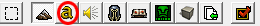

Bonjour à vous. Vous allez découvrir dans ce tutoriel comment créer un système qui donne le choix entre un mode All pick, où les joueurs choisissent eux-mêmes leur héros, et un mode All Random, où chaque joueur se voit attribuer aléatoirement un héros.
À noter que pour comprendre parfaitement ce tutoriel, il est préférable d'avoir quelques connaissances en matière de déclencheurs et de variables. Toutefois, si vous n'y comprenez rien, il vous suffit de suivre les instructions pour avoir votre propre mode -ap / ar. :)
Commencez par ouvrir le logiciel indispensable : l'éditeur de Warcraft 3. Puis cliquez sur le a jaune pour ouvrir la fenêtre des déclencheurs.

Tout d'abord, on va créer une variable de type dialogue, et une autre de type « bouton dialogue » (avec un déploiement de 1), qui va nous permettre de créer ce que nous voulons. Pour cela, allez dans l'éditeur de déclencheur et cliquez sur la croix jaune foncé, puis sur la croix verte pour créer une nouvelle variable. On appelle la première variable dialog_mode et la deuxième button_mode :
La variable du dialogue ne nécessite aucun déploiement puisqu'on ne pose qu'une question, mais la deuxième a besoin de deux valeurs (de 0 à 1) car il y a deux réponses possibles.
Pour les joueurs ne possédant pas l'extension The Frozen Throne, courez vite l'acheter ou faites deux variables différentes pour les boutons de dialogue.
Passons maintenant au déclencheur qui va activer cette boîte de dialogue. Commencez par enlever tous les déclencheurs par défaut de votre carte si ce n'est déjà fait, puis créez un déclencheur (je le nomme choixmode). En événement, on va mettre Temps - Elapsed game time is 1.00 seconds. Pourquoi pas Map Initialization ? Parce que ça bug avec les boîtes de dialogue. :p Le Trigger ne nécessite aucune condition, on laisse donc cette partie vide. Puis en Actions, on change le titre de notre boîte, ainsi que les deux questions et on affiche la boîte de dialogue (sans oublier d'assigner les variables button_mode (0) et button_mode (1) aux boutons créés). Voici un petit aperçu de ce que cela doit donner :
Voilà, vous pouvez tester si vous voulez, au lancement de la partie, vous devrez choisir quel mode vous souhaitez jouer (à condition bien sûr d'être le joueur 1 (Rouge)). Maintenant, nous allons détecter le choix du joueur, et agir en conséquence. ^^ Nous allons donc créer un nouveau trigger (nommé detectionchoix), dans lequel nous allons mettre en événement : Dialogue - A dialog button is clicked for dialog_mode. Des conditions sont nécessaires pour voir si le joueur a choisi la première ou la seconde question, mais nous allons les placer en fait dans la partie action. :-° Donc, dans la partie action :
si le bouton cliqué est le premier, alors le joueur a choisi le mode -ap ;
sinon, il a choisi le mode -ar.
Pour cela, il faut choisir l'action If / Then / Else , Multiples functions. En condition (If), si le bouton cliqué est le button_mode (0). Alors (Then) on déclenche le trigger apmode. Sinon (Else) on déclenche le trigger armode.
Commencez par créer ces déclencheurs et laissez-les vides, on s'en occupera dans la prochaine partie. À noter : il peut être utile de ne pas laisser « on » le trigger, pour éviter qu'il se déclenche sans qu'on le veuille :
.
Voici l'aperçu de ce que vous devriez obtenir :
En fait, on n'avait pas besoin d'une variable à déploiement !
Euh ouais... Mais il vaut mieux faire comme ceci pour ne pas être paniqué quand on a affaire à plus de deux réponses possibles : il suffit de remettre une action If / Then / Else , Multiples functions dans la partie Else, et vérifier si ce n'est pas le button_mode (1) qui a été cliqué, et ainsi de suite...
Voilà, vous savez maintenant comment poser une question à un joueur, et récupérer sa réponse. Nous allons voir dans le prochain chapitre comment créer deux tavernes dans le cas où le joueur a choisi -ap, ou créer un super système de la mort qui tue au cas ou le joueur voudrait un mode -ar. Un bon divertissement en perspective. :p
Ce sera le mode le plus simple à mettre en place. En effet, il suffit de créer deux régions où seront placées les tavernes :
Puis mettre dans notre trigger apmode deux actions : Unit - Create 1 Taverne for Neutre Passif at (Center of Région 1 <gen>) ... Unit - Create 1 Taverne for Neutre Passif at (Center of Région 2 <gen>) ...
On peut aussi ajouter un paysan pour notre joueur afin d'acheter un héros : Unit - Create 1 Paysan for Joueur 1 (Rouge) at (Joueur 1 (Rouge) start Location) ...
Voilà, ce mode est extrêmement simple à mettre en place, maintenant passons aux choses sérieuses : le mode All Random !
Commencez par créer une variable (je la nomme rand_hero), de type « Type-unité », dont le déploiement sera en fonction du nombre de héros que vous désirez (j'en ai mis 6, donc la variable déploiement à 5) :
Maintenant, on n'a plus qu'à assigner dans notre trigger armode les héros correspondant aux variables, puis de créer une boucle pour assigner à chaque joueur un héros aléatoire :
Voici l'action qui fait « si le joueur numéro X joue, alors on lui crée un héros au hasard à sa base » :
C'est la fin de ce tuto, j'espère qu'il a été rédigé assez clairement.
J'ai délibérément mis de côté tout le « superflu » : affichage aux joueurs du mode choisi, optimisation des tavernes, etc. car le but était avant tout de créer une question, agir en conséquence et créer un monde random. Si toutefois vous avez des réserves / questions sur le tuto ou même sur l'éditeur de map, n'hésitez pas à m'envoyer un MP ou un mail. ;)